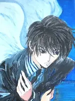
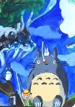
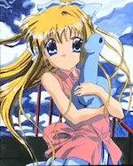
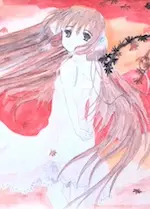
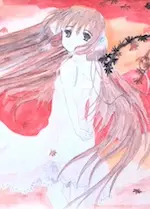

2024
Septembre
-
29 —
Comédie, action, tranche de vie, enquêtes et fantasy


 Young Sheldon, ♡ Lupin, ♡ Le remplaçant, ♡ HPI, Brocéliande, Les anneaux de pouvoir
Young Sheldon, ♡ Lupin, ♡ Le remplaçant, ♡ HPI, Brocéliande, Les anneaux de pouvoir -
19 —
 Nouvelle balade dans la vallée de Chaudefour
Nouvelle balade dans la vallée de Chaudefour
Août
-
31 —
Poneys de Noël à gogo, gloubi-boulga émotionnel et comédie inspirée


 ♡ La Princesse et le bodyguard, La probabilité statistique de l’amour au premier regard, À Noël mon Prince viendra, Love again, Amoureuse de mon meilleur ami, Vice versa 2, ♡ Harold et le crayon magique
♡ La Princesse et le bodyguard, La probabilité statistique de l’amour au premier regard, À Noël mon Prince viendra, Love again, Amoureuse de mon meilleur ami, Vice versa 2, ♡ Harold et le crayon magique -
25 —
Creacover 2024, première partie


-
18 —
Pseudo comédies, presque romance, semblant d’horreur et rencontres


 Ducobu passe au vert, Jeff Panacloc - À la poursuite de Jean-Marc, To the Moon, Le mangeur d’âmes, Et plus si affinités, Rose - Petite fée des fleurs
Ducobu passe au vert, Jeff Panacloc - À la poursuite de Jean-Marc, To the Moon, Le mangeur d’âmes, Et plus si affinités, Rose - Petite fée des fleurs - 13 — Vacances en Ardèche en août 2024
-
02 —
Romance, drames, comédies et bestioles


 ♡ Drawing Closer, L’imaginaire, Bis Repetita, Gremlins
♡ Drawing Closer, L’imaginaire, Bis Repetita, Gremlins
Juillet
-
31 —
 💖 La dernière allumette de Marie Vareille
💖 La dernière allumette de Marie Vareille
-
25 —
 Drama japonais From 5 to 9
Drama japonais From 5 to 9
- 13 (édité) — Balade un dimanche
-
11 —
Actions & comédie, quelques frissons, poney de Noël et émotions fortes


 Chien et chat, The fall guy, Sleep, Comment rencontrer l’âme sœur en 10 leçons, Love coach malgré moi, Arthur the King
Chien et chat, The fall guy, Sleep, Comment rencontrer l’âme sœur en 10 leçons, Love coach malgré moi, Arthur the King - 11 (édité) — 💖 Les Cosmiques 🎵 de Diatomée
-
05 —
Tournage qui vire au fiasco et intellos asociaux

 Fiasco, The Big Bang Theory
Fiasco, The Big Bang Theory -
04 —
Flics fêlés, aides soignants impliqués, prof dépassé et requins mutants


 Les infaillibles, Maison de retraite 2, Pas de vagues, Sous la Seine
Les infaillibles, Maison de retraite 2, Pas de vagues, Sous la Seine -
04 —
Amis imaginaires, guide à plumes, monstres et rêve plus doux que la réalité


 Blue et compagnie, Le garçon et le héron, Monster High 2, ♡ Le Royaume des Abysses
Blue et compagnie, Le garçon et le héron, Monster High 2, ♡ Le Royaume des Abysses
Juin
-
30 —
Musique, timidité, bêtise et politiquement incorrect


 ♡ Música, ♡ L’amour au pied du mur, À la conquête de Billy Walsh, L’idée d’être avec toi, My dear f***ing prince
♡ Música, ♡ L’amour au pied du mur, À la conquête de Billy Walsh, L’idée d’être avec toi, My dear f***ing prince -
29 —
 Objectif petit ami, roman
Objectif petit ami, roman
-
29 —
Dessins du passé

 
 -
27 —
 Megumi - Les Monts Enchantés deuxième version, roman
Megumi - Les Monts Enchantés deuxième version, roman
-
23 —
 Les dents de Chastel, roman
Les dents de Chastel, roman